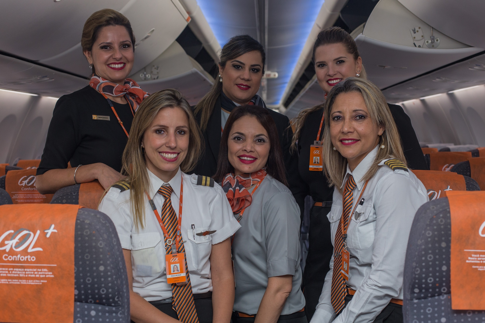

Mulheres na aviação
Você Sabia?
Sabe-se que nos últimos dez anos a mulher está cada vez mais presente no mercado de trabalho, tanto em países desenvolvidos como em desenvolvimento. Aparentemente, o mundo anda apostando em profissionais do sexo feminino cujo perfil inclui a multifuncionalidade, a capacidade de trabalho em equipe, a persuasão e a cooperação. Hoje elas ocupam altos postos nas grandes empresas e até pilotam jatos, embora ainda haja desigualdade salarial entre homens e mulheres e desafios para conseguir seu espaço em diversas profissões.
A entrada da mulher como piloto na aviação brasileira deu-se na década de 30. Em 2006, formou-se a primeira oficial aviadora na Força Aérea Brasileira (FAB). Atualmente a FAB conta com mais de 20 mulheres no comando de aeronaves, inclusive as de grande porte, que atuam principalmente no transporte de tropas e na busca e salvamento. Desde 2011 há relatos de voos comerciais pilotados por mulheres com uma tripulação inteiramente feminina no Brasil, constituída de piloto, copiloto, chefe de cabine e comissárias.
Felizmente, a mulher vêm conquistando cada vez mais seu espaço no setor aeronáutico, mas apesar do crescimento, as mulheres ainda são minoria na classe dos pilotos.
No Brasil, enquanto elas são 428 (3%) com licença para voar, eles somam 13.952 (97%). O setor de aviação brasileiro ainda é muito masculinizado. Na categoria de piloto de linha aérea, considerado o topo da carreira, as mulheres são menos de 1%, apenas 49 do total de 5.211 licenças.
Quando falamos em meio mundial, de acordo com a International Society of Women Airline Pilots, existem 7.409 mulheres piloto no mundo todo, o que representa apenas 5,18% dos pilotos das 34 principais empresas aéreas do planeta.